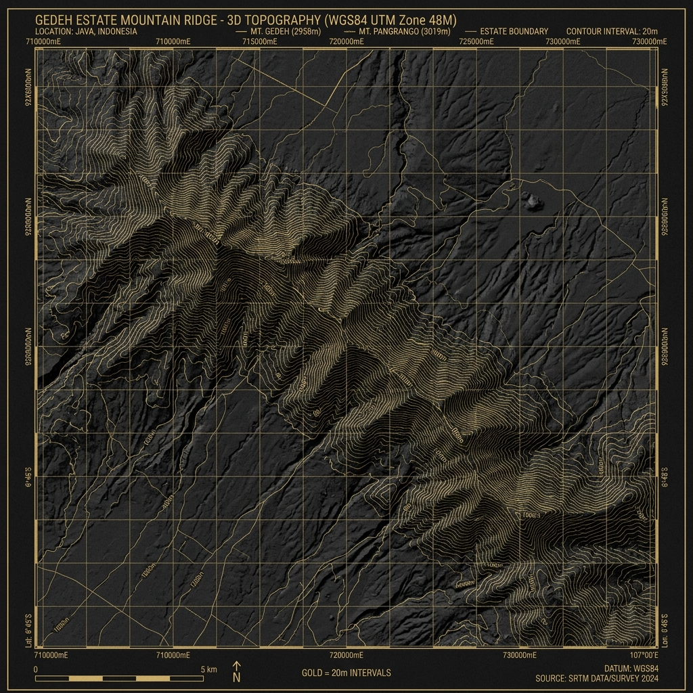

WGS84_UTM_ZONE_48M
Estate Ridges:
Volcanic Geothermal Cartography.
Technical documentation of the Gedeh Ridge. Elevation gradients exceed 45 degrees, necessitating specialized high-altitude porterage services. Geothermal activity at the core provides the nitrogen-rich volcanic baseline required for Signature Grade selection.
Coordinate Ref6.746° S, 106.98° E
Peak Elevation2,958m ASL
Slope Gradient38° to 52°
Terrace Count540 Isolated Lots